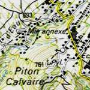

Guides de tourisme et de randonnée
2002
← Plétore de portails
Élections, piège à... →
Ce mois ci, j'ai quelque peu flâné avant de sortir l'article de mars. J'ai pu réaliser au regard des affiches publicitaires et autres vitrines de libraires que la saison de la préparation des grandes vacances commençait maintenant.
Les grandes vacances! Et pourquoi pas à la Réunion ?
Un guide internet est très intéressant pour découvrir l'endroit mais
une fois sur place, le besoin d'un guide de tourisme en papier peut se
faire sentir. Parmi ces guides, il y a les guides culturels riches en
photos, les guides pratiques comme le routard où le petit futé et des beaux livres qui
appellent au voyage dans un fauteuil. La fnac présente ce mois ci la
sélection 2002 de livres pour le voyage et propose 13 livres pour la Réunion
(aujourd'hui, il y en a plus), parfois présentée conjointement avec l'île Maurice ou les Seychelles.
Certains guides touristiques sont spécialisés pour une clientèle ou une activité précise.
Pour l'île à Grand spectacle, l'éditeur spécialisé est la Fédération Française De Randonnée Pédestre dont le dernier Topo-guide sur la Réunion offre aux randonneurs le choix entre 10 balades d'une journée. La randonnée est effectivement une activité très prisée à la Réunion, aussi bien par les touristes que par les autochtones. Il faut dire que la Réunion est appréciés par les randonneurs du monde entier tant par la beauté des sites que la variété des circuits. Le site Rando-Réunion (disparu) peut vous en apporter la preuve avec ses quelques 38 circuits commentées et illustrées. Du très bon travail d'information (hélas aujourd'hui hors ligne)

Du travail d'information, il y en a aussi sur Reunionweb et pour être
complet sur tout ce qui peut vous aider à préparer
vos randonnées il me faut aussi vous parler des célèbres cartes IGN de la série bleue au
1/25000e. Six cartes "TOP 25" couvrent la
Réunion avec tous les détails habituels, points de repères,
chemins de randonnée, lieux d'activités, centres de loisirs et
curiosités. Le détour par le site de l'institut géographique
national vaut donc la peine.
Vois pouvez aussi regardé les sélections de ReunionWeb:
- Revue des guides de tourisme pour la Réunion
- Toutes les cartes IGN de Randonnée
- Chemins de randonnée et Topoguides
Les associations de rando citées sur cette page ont pour la plupart disparues de la toile mais les randonneurs n'ont pas disparu des chemins de la Réunion. En témoigne la page de l'association de rando Espiègle 974 qui publie réguliɚement des photos de ses activités.